이 에이전트가 해 주는 일
이 영상은 Google Ads 계정을 사람이 직접 만지는 대신, Claude Code에 미리 짜 둔 명령으로 운영하는 방법을 보여 줘요. 발표자는 계정 진단, 키워드 찾기, 캠페인과 광고 만들기, 웹사이트와 랜딩 페이지 만들기, 배포까지를 에이전트 하나로 묶었다고 해요. 만드는 데 한 달이 걸렸다고 해요.
발표자는 이전에 팔았던 회사에서 Google Ads에 18만 8천 달러를 썼고, 추적을 시작한 뒤 73만 달러를 벌었다고 소개해요. 화면에 띄운 실제 계정을 보면 왼쪽 위 빨간 칸의 누적 비용이 캐나다 달러로 188,213.98로 말한 금액과 맞아요. 그 옆 파란 칸의 전환 가치는 103,933.56이에요.
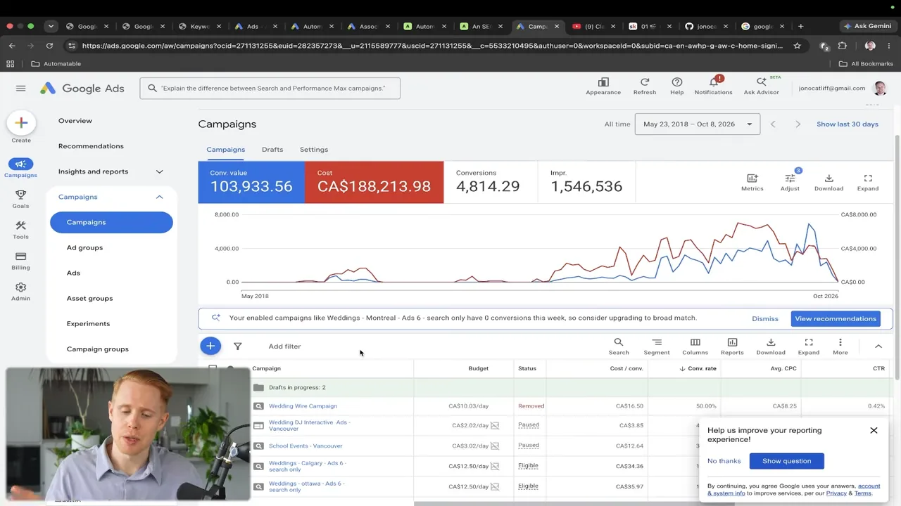
왜 써야 하나요
발표자는 이유를 카드 다섯 장으로 정리해요. 1번 카드는 돈이 새는 검색어(배관공 연봉, 무료 강좌 같은 것)를 찾아 412달러 낭비를 보여 주고, 2번은 한 달 걸리던 일이 몇 시간으로 줄어드는 그림이에요. 3번은 광고 두 개를 시험해 이기는 쪽을 남기는 그림이고, 4번은 "추적이 제대로 돼 있어?"라는 질문에 Claude Code가 답하는 대화예요. 5번은 월 5천 달러짜리 대행사 청구서에 '해고' 도장이 찍혀 있어요.
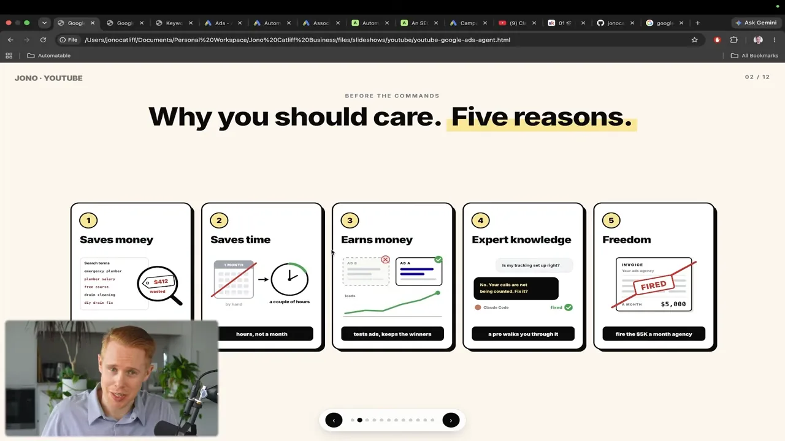
명령 8개가 이어지는 순서
발표자의 슬라이드는 명령마다 'COMMAND 1 OF 8' 같은 번호를 붙여 하나씩 설명해요. 여러 장에 흩어진 순서를 한 그림에 모으면 이래요. 앞의 두 개는 계정을 붙이고 정리하는 단계이고, 가운데 셋이 광고를 만드는 단계, 뒤의 셋이 사람이 도착할 페이지를 만들고 내보내는 단계예요.
설계도는 영상 설명란 링크를 따라가면 나오는 GitHub 저장소에 있어요. 화면 가운데 초록색 Code 버튼을 누르면 HTTPS(HyperText Transfer Protocol Secure) 주소가 뜨고, 그 주소를 복사해 두면 준비가 끝나요.
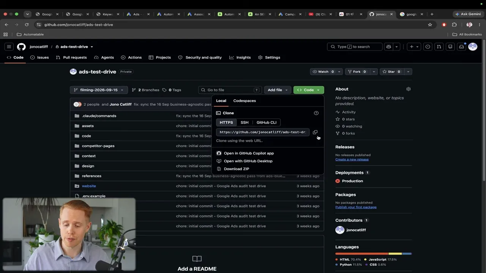
VS Code에 설계도 넣고 Claude Code 켜기
Claude Code를 처음 쓰는 사람을 위해 발표자는 "15초 속성 과정"을 붙여요. 필요한 건 무료 코드 편집기 VS Code 하나예요. Claude와 대화만 주고받을 수 있으면 나머지는 따라올 수 있다고 해요.
- VS Code를 설치하고 첫 화면에서 'Clone Git Repository...'를 눌러요 — 위쪽 검색창에 앞에서 복사한 GitHub 주소를 붙여 넣어요. 저장할 폴더를 묻고, 이어서 열지 물어요. 발표자는 다운로드 폴더에 저장했어요
- 왼쪽 확장 탭에서 Claude를 검색해 설치해요 — 첫 번째로 나오는 'Claude Code for VS Code'예요.
- 오른쪽 위 Claude 아이콘을 눌러 대화창을 열어요
첫 화면 왼쪽 Start 목록에서 'Clone Git Repository...'가 클론을 시작하는 버튼이에요.
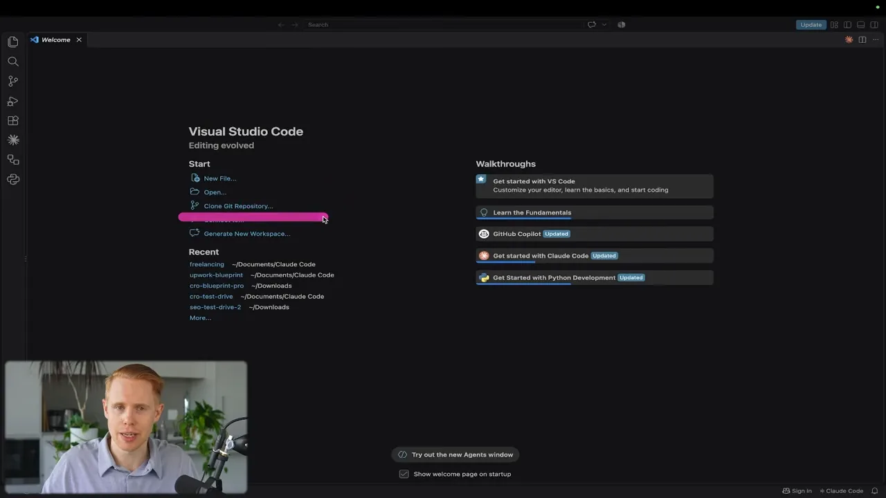
클론이 끝나면 왼쪽 탐색기에 저장소 폴더가 펼쳐져요. .claude, assets, code, competitor-pages, context, website 같은 폴더와 CLAUDE.md 파일이 보여요.
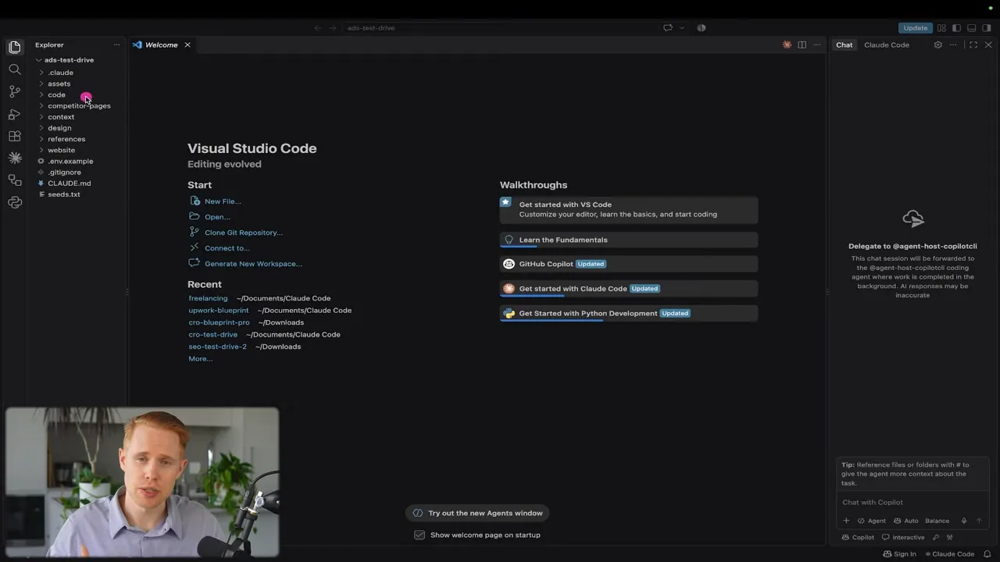
.claude/commands 폴더를 열어 보여 주며, 여기 든 것들이 Google Ads를 자동으로 다룰 도구 목록이라고 설명해요. 영상 04:32에서 보기확장 탭에서 Claude를 검색하면 Anthropic이 만든 'Claude Code for VS Code'가 나와요. 설치하면 오른쪽에 Claude Code 대화 패널이 붙어요.
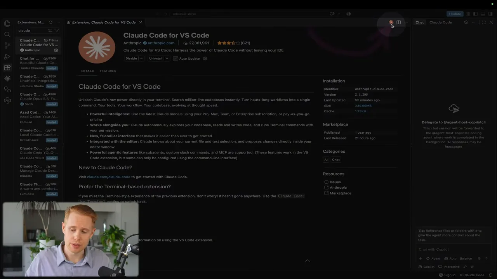
/audit 같은 슬래시 명령을 입력하면서 영상의 나머지가 진행돼요. 영상 04:44에서 보기Google Ads와 연결하기
Claude가 Google Ads 계정을 읽고 고치려면, Google에 "이 프로그램이 내 계정에 들어와도 된다"는 허락을 한 번 받아 둬야 해요. 발표자는 이 과정을 "인류가 아는 가장 지루한 화면을 3분 동안 함께 지나가는 일"이라고 불러요. 한 번 지나가면 영상에서 가장 어려운 부분이 끝나요.
프로젝트를 만들고 API 접근 등급 올리기
- Google Cloud Console에 들어가요 — Google Ads 계정과 같은 이메일로 가입해야 해요.
- 새 프로젝트를 만들어요 — 이름은 아무거나 괜찮아요. 10초쯤 걸려요.
- 위쪽 검색창에 Google Ads API를 쳐서 사용 설정해요
- Access levels → Manage에서 'Apply for access'를 눌러요 — 몇 분 안에 Explorer가 열리고, 한 번 더 신청하면 Basic이 열린다고 해요.
접근 등급은 Google 개발자 문서의 표에 정리돼 있어요. Test는 테스트 계정만 다룰 수 있어요. Explorer부터 실제 계정(production account)에 손댈 수 있는데, 하루 작업 수가 2,880회로 묶여 있어요. Basic은 실제 계정에서도 하루 15,000회예요.
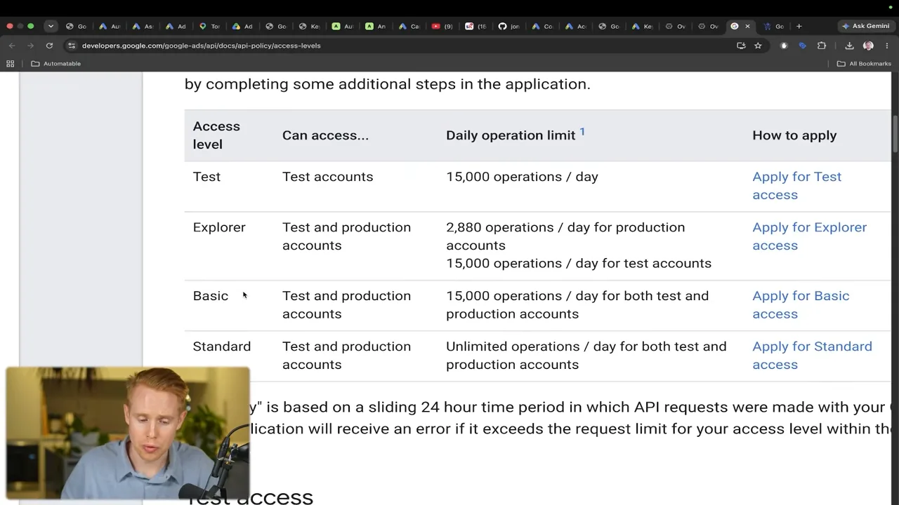
OAuth 동의 화면과 클라이언트 ID
- 왼쪽 위 메뉴 → API 및 서비스 → OAuth 동의 화면 → 시작하기 — 앱 이름은 아무거나, 이메일은 Google Ads 계정 이메일을 넣어요. 사용자 유형은 External이에요.
- Audience에서 나 자신을 테스트 사용자로 추가해요 — 이때도 Google Ads 계정 이메일이어야 해요.
- 사용자 인증 정보 → 새로 만들기 → OAuth 클라이언트 ID(Identifier) — 애플리케이션 유형은 '데스크톱 앱', 이름은 Claude처럼 아무거나요.
- JSON 파일을 내려받아 VS Code로 끌어다 놓아요
클라이언트를 만들면 'OAuth client created' 창이 떠요. 가운데 노란 경고는 이 창을 닫으면 클라이언트 비밀번호를 다시 볼 수 없다는 뜻이에요. 그래서 맨 아래 'Download JSON'을 바로 눌러 둬야 해요.
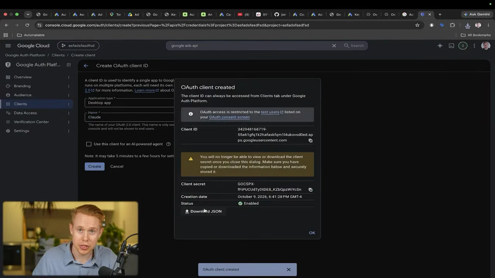
/api-setup으로 마무리
여기서부터는 Claude가 맡아요. /api-setup을 입력하고 "client secret JSON 파일을 읽고 Google Ads에 연결해 줘"라고 보내요. 그냥 /api-setup만 보내도 앞 단계를 클릭 하나하나 안내해 준다고 해요. 그러면 브라우저가 열려 Google 로그인을 요청해요. Google Ads 계정 이메일을 고르고 본인 확인을 하면 끝이에요. 중간에 '확인되지 않은 앱'이라는 경고가 뜨는데, 직접 만든 앱이라 그런 거니 '계속'을 누르면 돼요.
발표자의 슬라이드는 이 단계를 네 칸으로 보여 줘요. 1 Google Cloud 프로젝트 만들기, 2 접근 등급(Explorer는 당일, Basic은 몇 분 뒤), 3 Google 로그인 한 번, 4 연결 완료예요. 4번 칸에 Claude가 저장해 두는 값 네 개(CLIENT_ID, CLIENT_SECRET, REFRESH_TOKEN, CUSTOMER_ID)가 보여요. 아래쪽에는 더는 필요 없는 것으로 '개발자 토큰'과 '관리자 계정'이 줄 그어져 있어요.
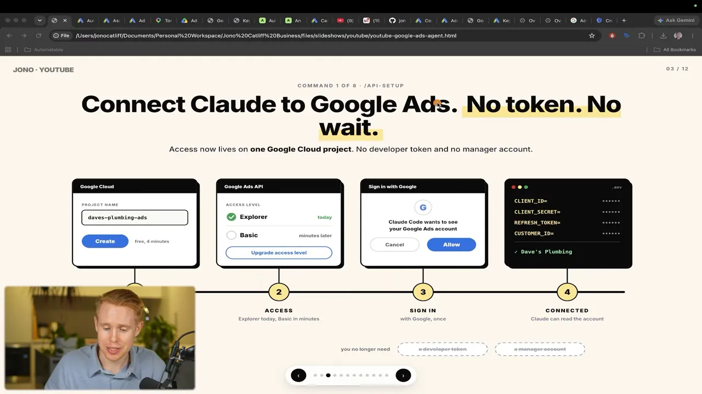
/audit: 돈이 새는 곳 찾고 막기
연결이 끝나면 가장 먼저 기존 계정을 진단해요. 발표자는 "어딘가에서 돈이 새고 있을 가능성이 높다"고 말해요. Google Ads 계정이 아직 없다면 한 달쯤 실제 데이터가 쌓인 뒤에 돌아와 이 단계를 하면 돼요.
Claude Code에 /audit을 입력하고 회사 설명을 덧붙여요. 설명이 자세할수록 진단이 좋아져요. 발표자는 "우리는 DJ 서비스를 하는 DJ 회사"라고 한 줄만 쓰고는, 이게 최악의 예시라며 웃어요.
문제마다 금액이 붙는 보고서
슬라이드는 감사가 하는 일을 한 장에 보여 줘요. 가상의 배관 업체 'Dave's Plumbing'의 최근 30일을 읽고, 새는 곳 네 군데에 가격표를 붙여요. 서비스 지역 밖에서 온 클릭이 612달러, 다른 사이트(검색 파트너·디스플레이)에 노출된 게 210달러, 새벽 2시 클릭, 그리고 '배관공 연봉', '배수구 뚫는 법' 같은 전화로 이어지지 않는 검색어가 412달러예요. 오른쪽 위 노란 가격표가 합계 월 1,499달러예요.
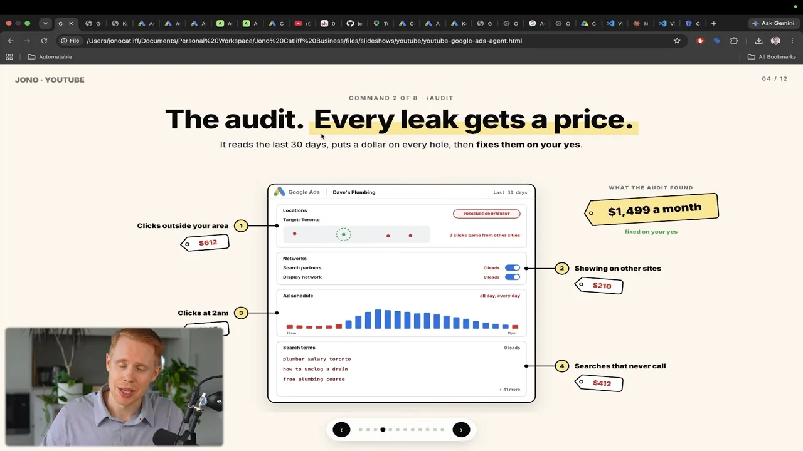
데모 계정(DJ(Disc Jockey) 회사)의 보고서 맨 위에는 점수 두 개가 있어요. 왼쪽 51점은 지금 점수이고, 오른쪽 92점은 고칠 수 있는 걸 다 고쳤을 때 예상 점수예요. 아래 줄에는 기간 내 지출 2,767달러, 위험에 처한 돈 월 365~1,600달러, 리드당 비용 43달러가 나와요.
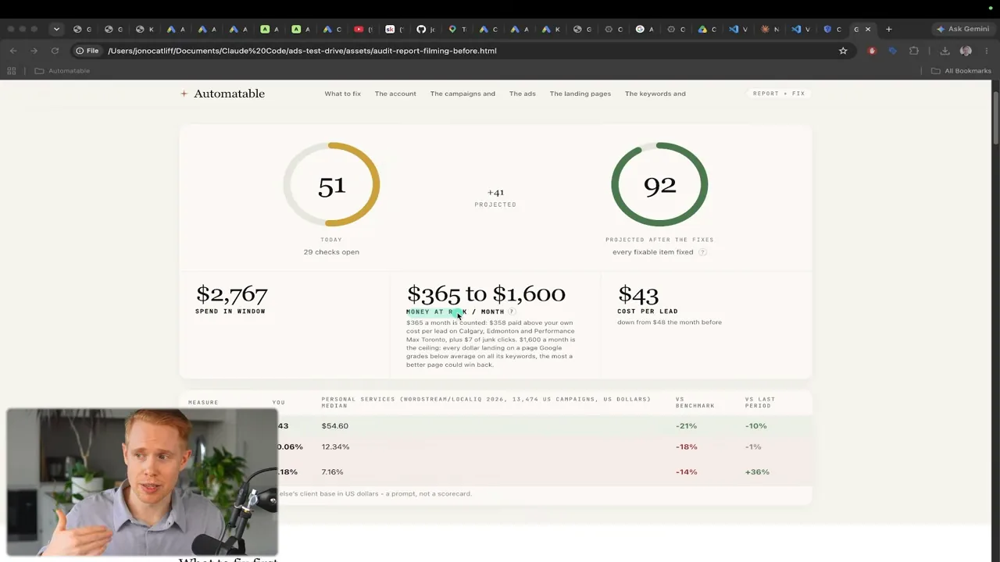
범위의 양 끝은 성격이 달라요. 발표자의 설명을 표로 옮기면 이래요.
| 범위 | 뜻 | 영상의 예 |
|---|---|---|
| 아래쪽 숫자 | 확실히 버리고 있는 돈 | 석고보드 업체가 하지도 않는 조경 키워드로 클릭을 사요 |
| 위쪽 숫자 | Claude가 추정한 간접 손실 | 전환 추적이 없어 리드 수를 몰라요. 광고가 Google 지도에 안 나와요 |
보고서는 영향이 큰 것부터 'What to fix first' 목록을 만들어요. 1번은 캘거리·에드먼턴 캠페인이 자기 도시 이름을 막아 둔 문제(월 237달러), 2번은 광고가 Google 지도에 안 나오는 문제, 3번은 전화가 하나도 집계되지 않는 문제예요. 그 뒤로 계정, 캠페인과 광고 그룹, 광고, 랜딩 페이지, 키워드 순서로 계정 전체를 훑어요.
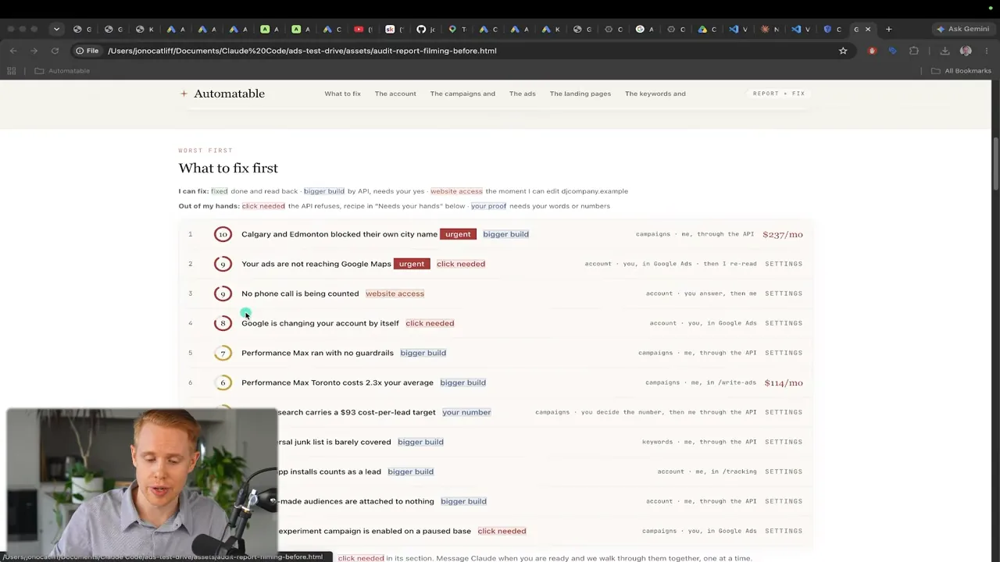
목록 위쪽 범례에는 꼬리표가 두 묶음으로 설명돼 있어요. 'I can fix'는 Claude가 고칠 수 있는 것, 'Out of my hands'는 사람이 해야 하는 것이에요. 발표자는 Claude가 이 중 95%를 자동으로 처리할 수 있다고 말해요.
| 꼬리표 | 누가 | 뜻 |
|---|---|---|
| fixed | Claude | 고치고 다시 읽어 확인까지 끝났어요 |
| bigger build | Claude | API로 고칠 수 있지만 동의가 필요해요 |
| website access | Claude | 웹사이트를 고칠 권한이 생기면 바로 해요 |
| click needed | 사람 | API가 막혀 있어 Google Ads 화면에서 직접 눌러야 해요 |
| your proof | 사람 | 내 말이나 숫자가 있어야 해요 |
"찾은 걸 전부 고쳐 줘"
고치는 방법은 한 문장이에요. Claude에게 "Please fix everything you found"라고 보내면 돼요. 데모에서 Claude가 남긴 마지막 답을 보면 11개 중 9개를 고쳤고, 하나는 사람이 눌러야 하고 하나는 웹사이트 권한이 필요하다고 해요. 쓸모없는 검색어 26개도 막았다고 적혀 있어요.
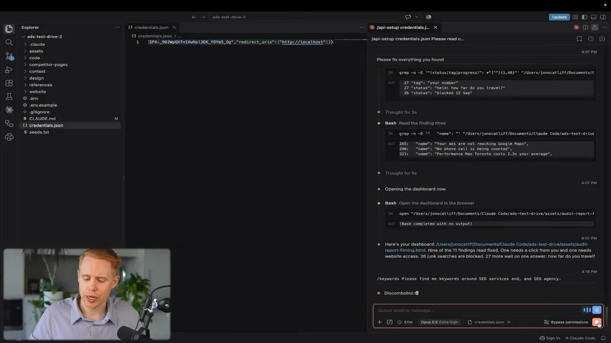
고친 것 중 하나가 계정 단위 네거티브 키워드 목록이에요. Google Ads의 계정 설정 화면을 열어 보면 'apprenticeships', 'career', 'careers', 'casino', 'certificate' 같은 단어가 구문 일치로 들어가 있어요. 발표자의 예로는 '배관공 채용'을 찾는 사람은 절대 배관 서비스를 사지 않아요.
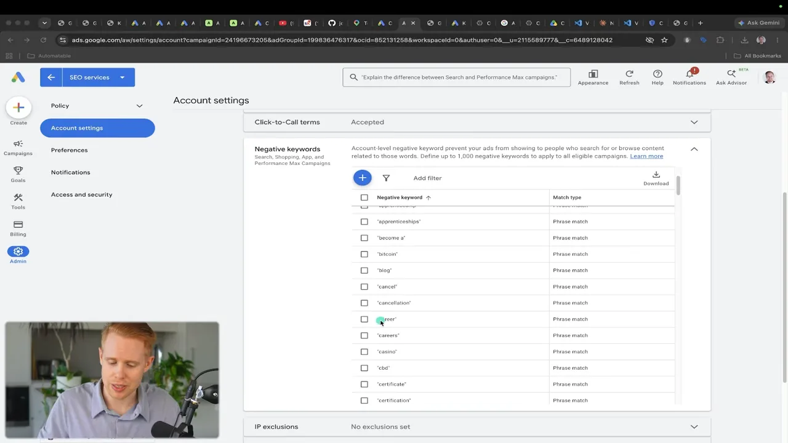
다른 하나는 전환 추적이에요. 사람이 웹사이트에서 전화를 걸거나 양식을 채우는 순간을 세는 장치예요. 전환 요약 화면에 '리드 양식 제출', '전화 리드', '연락처' 같은 목표가 보이고, 일부에는 '주의 필요'나 '잘못 설정됨' 표시가 붙어 있어요.
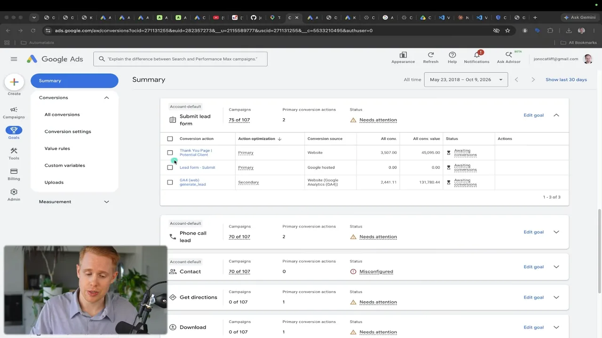
/keywords: 서비스별 키워드와 '검색어 그대로' 전략
예전에는 키워드 플래너에 들어가 이길 키워드를 직접 골랐어요. 발표자는 제대로 하려면 며칠이 걸렸다고 해요. 이제는 Claude가 키워드 수천 개를 모아 쓰레기를 거르고, 이길 것만 골라 서비스별로 묶어 줘요. 이 목록이 뒤에 나올 캠페인, 광고, 광고 애셋, 랜딩 페이지의 재료가 돼요.
데모에서는 /keywords 뒤에 "SEO 서비스와 SEO 에이전시 키워드를 찾아 줘"라고 덧붙였어요. 덧붙이는 설명이 많을수록 결과가 좋아져요.
서비스별로 묶인 키워드 목록
결과 표는 서비스마다 한 덩어리예요. 1번 덩어리는 'seo services'(월 74,000회 검색)이고, 그 아래로 'seo agency', 'seo company', 'seo firm', 'seo agency near me' 같은 보조 키워드가 붙어요. 녹색 상자로 표시된 2번 'seo audit' 덩어리에는 'LAUNCH FIRST'(먼저 시작) 꼬리표가 있고, 그 아래 3번이 'local seo'예요. 오른쪽 끝 열은 검색 결과 맨 위에 광고를 띄울 때의 클릭 단가 범위예요.
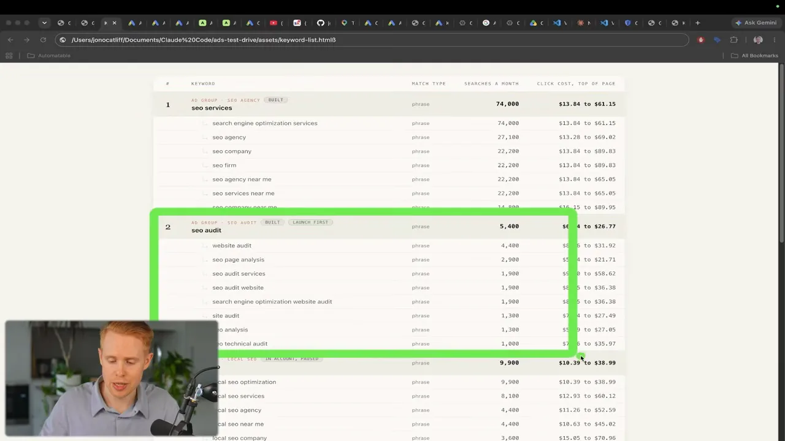
검색한 말을 광고와 페이지가 그대로 받아야 해요
발표자는 여기서 지역 광고의 이기는 전략을 "15초 안에" 설명해요. 키워드는 사람들이 Google에 실제로 친 말이에요. 그래서 광고와 랜딩 페이지도 그 말을 그대로 담아야 해요. 슬라이드는 이걸 세 칸으로 보여 줘요. 왼쪽은 사람들이 친 네 가지 말(seo agency, seo company, seo firm, seo services), 가운데는 그 묶음에 하나뿐인 광고 'SEO Agency in Toronto', 오른쪽은 같은 말을 제목으로 단 랜딩 페이지예요.
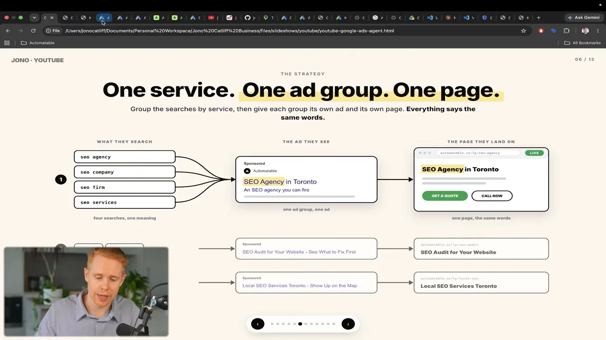
실제 예로 'toronto drywall'을 검색해 봐요. 첫 광고 'Toronto Renovation Experts'는 석고보드와 상관없어서 소비자는 누르지 않아요. 두 번째 'Express Drywall Services in Brampton'은 제목에 drywall이 바로 들어 있어요. 토론토는 없지만 브램턴이 토론토 바로 옆이라 발표자는 이걸 누를 거라고 해요.
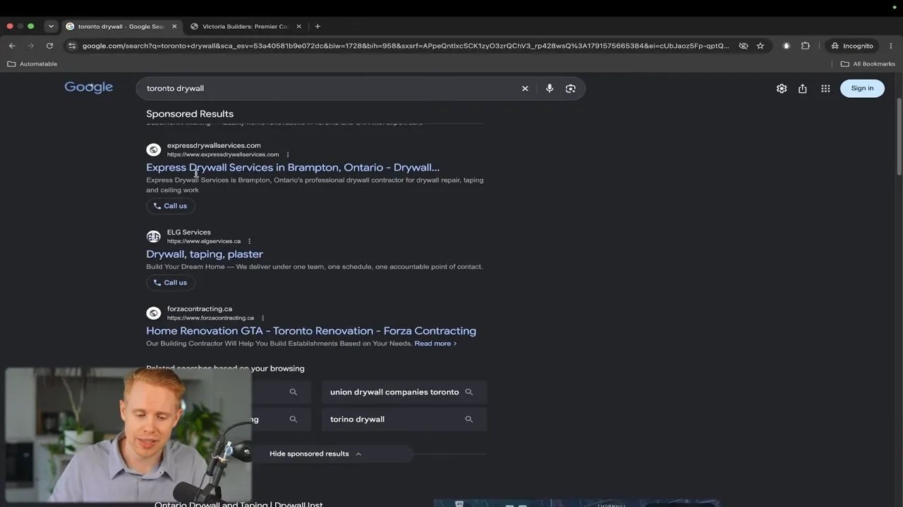
첫 번째 광고를 눌러 들어가면 더 어긋나요. 페이지 큰 제목이 'Toronto & GTA Construction Services'로, 석고보드가 아니라 건설 서비스를 말해요. 발표자는 이런 업체는 돈이 새고 있을 거라고 봐요.
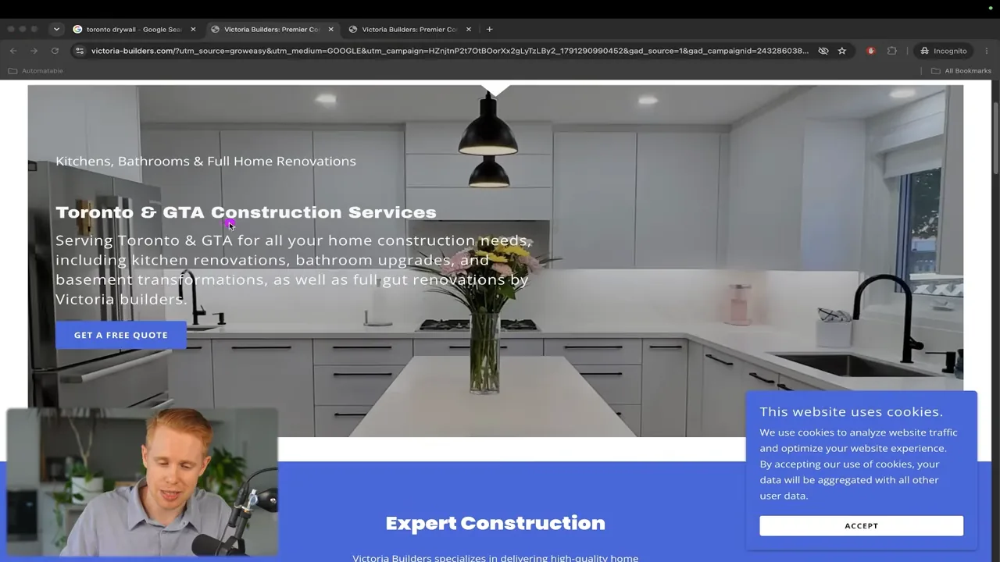
첫 캠페인과 광고 만들기
키워드 목록의 첫 서비스로 첫 캠페인을 만들어요. 발표자는 키워드를 하나 복사해 Claude Code에 붙여 넣는데, 이때 입력창에 친 명령은 다시 /keywords seo services예요. 바로 위 Claude의 답은 "광고 그룹 6개에 키워드 49개, 다음 단계는 /campaign-plan"이라고 안내하고 있고, 슬라이드에서도 4번째 명령은 /campaign-plan이에요. 따라 할 때는 /campaign-plan을 쓰면 돼요.
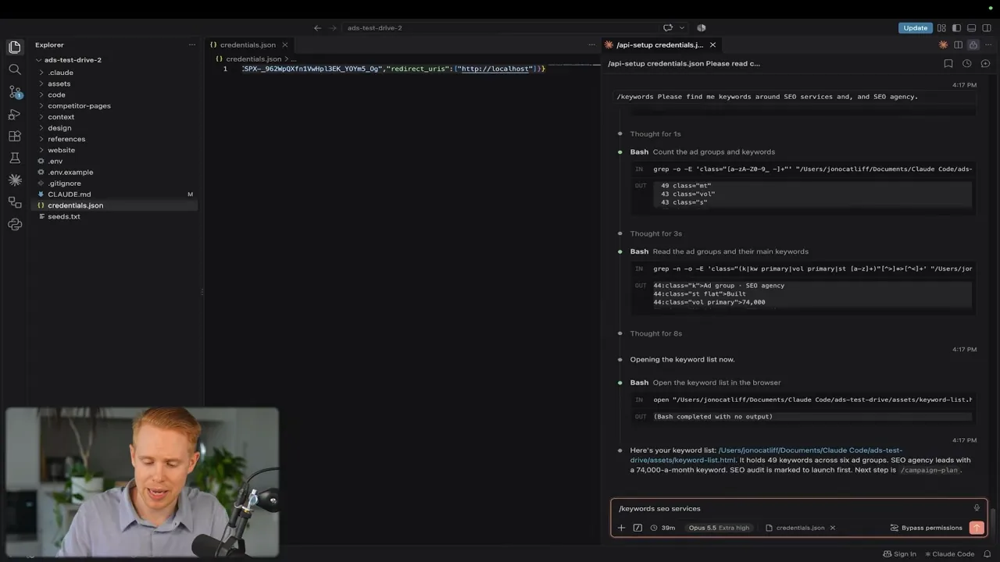
발표자는 Claude로 만드는 게 좋은 이유 두 가지를 들어요. Google Ads 화면은 헤매기 쉬워 시간과 불안을 많이 잡아먹어요. 그리고 Google이 필요 없는 걸 사게 만드는 숨은 장치가 많은데, Claude를 쓰면 그걸 전부 무시할 수 있어요.
캠페인과 광고 그룹은 폴더예요
발표자는 캠페인과 광고 그룹을 Google Drive의 폴더 구조에 비유해요. 슬라이드 맨 위 큰 폴더가 캠페인 'Toronto'예요. 하루 66달러 예산, 토론토 지역, 전환 수 최대화 목표가 여기 붙어요. 그 안의 폴더가 서비스별 광고 그룹(SEO agency, Google Ads agency)이고, 각 광고 그룹에는 키워드·광고·랜딩 페이지 세 파일이 들어 있어요. 오른쪽 스위치는 일시정지 상태예요.
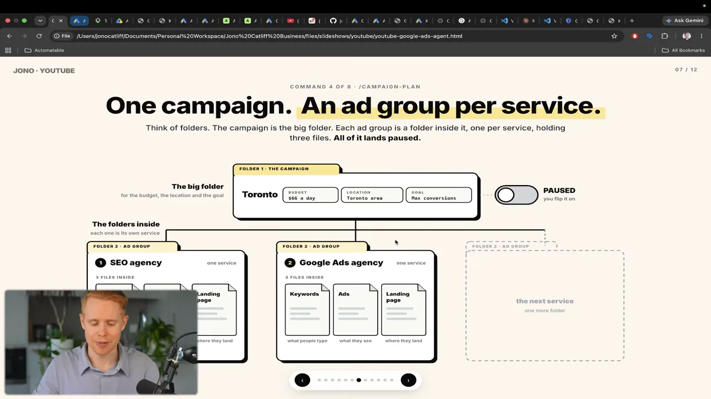
세 파일은 각자 맡은 일이 있어요. 키워드가 있어야 사람이 검색해서 광고를 찾고, 광고가 있어야 그 키워드에 보여 줄 게 있고, 랜딩 페이지가 있어야 들어온 사람을 받을 곳이 있어요. 하나라도 빠지면 그 서비스는 돌아가지 않아요.
캠페인 설정에서 볼 것
만들어진 캠페인의 설정 창을 열어 보면, 맨 위 Campaign status가 Paused예요. Claude는 동의 없이 캠페인을 켜지 않아요. 그 아래 Networks에서는 'Google 검색 파트너 포함'과 'Google 디스플레이 네트워크 포함' 체크가 모두 꺼져 있어요. 더 아래에는 예산 하루 65.79캐나다 달러, 입찰 전략 '전환 수 최대화'가 보여요.
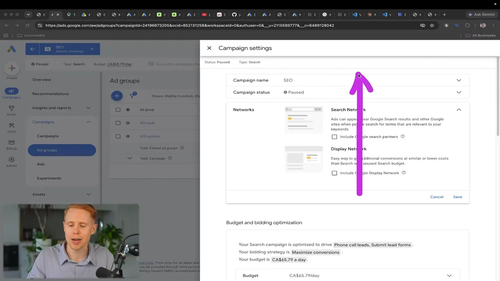
위치 설정에는 토론토만 있는 게 아니에요. Claude가 미시소가, 브램턴, 본 같은 주변 도시를 자동으로 끌어와 Locations에 49곳을 넣었어요. 화면에는 에이잭스, 오로라, 배리, 브램턴처럼 온타리오의 도시가 인구 수와 함께 보여요. 그 아래 Excluded locations에는 아프가니스탄, 알바니아 같은 나라가 218곳 들어 있어요.
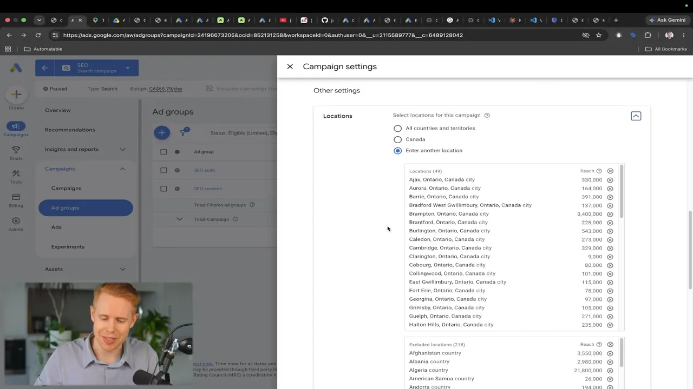
위치 옵션도 바꿔요. 화면의 Include 아래 두 선택지 중 위쪽 'Presence or interest'(실제 위치 또는 관심)가 Google의 기본값이고, 아래쪽 'Presence'(실제 위치)에 체크돼 있어요. 발표자는 '관심'이면 리비아에 사는 사람이 토론토에 관심만 있어도 광고가 나간다고 설명해요. 돈은 나가는데 그 사람은 절대 리드가 되지 않아요.
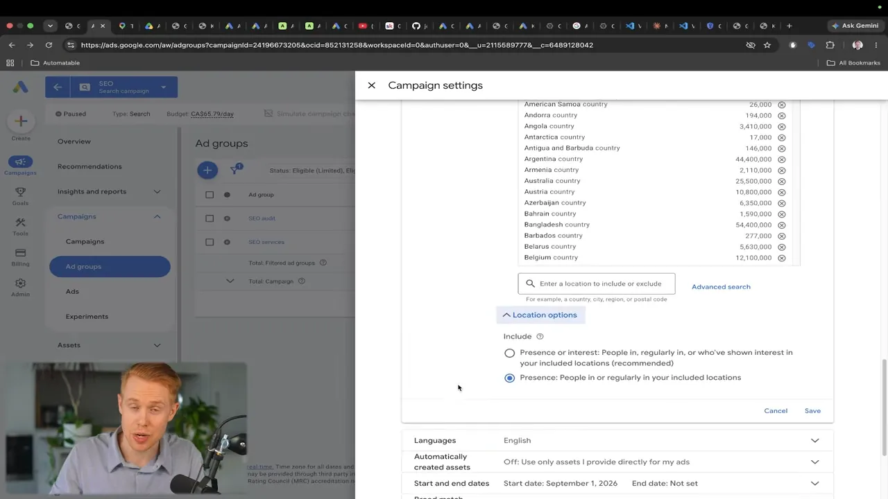
/write-ads로 광고 쓰기
다음은 /write-ads예요. "같은 캠페인용으로"라고만 덧붙여 보내면 광고 제목 15개와 설명 4개가 만들어져요. 광고 편집 화면 위쪽에는 광고 그룹 'SEO services'와 그 키워드들이 보이고, 오른쪽 미리보기에 실제 검색 광고 모양이 나와요.
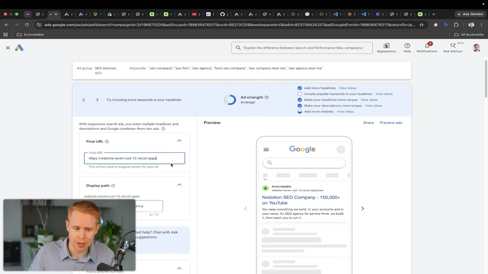
광고 제목은 두 종류로 나눠 넣어요. 화면에서 위쪽 세 제목 오른쪽에 파란 압정과 1이 붙어 있어요. 1번 자리에 고정했다는 표시예요. 'SEO Agency in {LOCATION(City):Toronto}'처럼 검색한 말을 담은 제목이 여기 들어가요. 중괄호 부분은 보는 사람의 도시 이름으로 바뀌고, 모르면 Toronto가 들어가요. 그 아래 'We teach you to fire us' 같은 제목은 고정하지 않았어요.
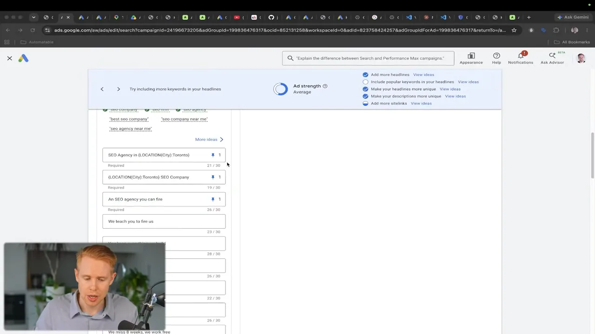
발표자가 말하는 두 제목의 역할을 그림으로 모으면 이래요. 앞에 오는 고정 제목이 검색어를 받아 '이 광고를 누를 자격'을 얻고, 뒤에 오는 제목이 제안으로 사람을 붙잡아요.
광고 애셋으로 화면을 더 차지하기
Claude는 광고 애셋도 만들어 광고에 붙여요. 슬라이드의 검색 광고 그림에서 번호를 따라가 보면 이래요. 1 업체 이름과 로고, 2 제목 15개, 3 설명 4개, 4 콜아웃(고를 이유를 짧게), 5 구조화된 스니펫(파는 것 목록), 그리고 전화 버튼, 7 WhatsApp 메시지, 8 견적 양식이에요. 견적 양식은 Google을 떠나지 않고 견적을 받게 해 줘요.
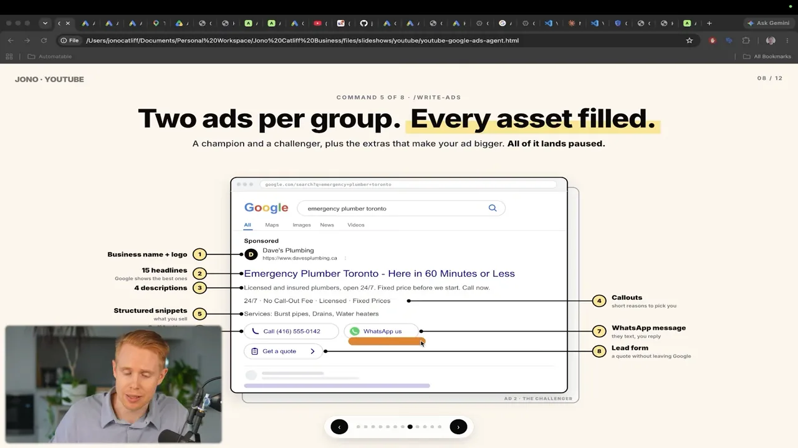
발표자가 꼽는 진짜 장점은 따로 있어요. 시간이 없어서 못 하던 일, 예를 들어 광고 제목이나 광고 애셋을 대량으로 분할 테스트해서 어떤 게 클릭을 가장 많이 부르는지 알아내는 일을 할 수 있게 된다는 거예요.
랜딩 페이지, 전환 테스트, 공개
광고가 사람을 보낼 곳을 만들 차례예요. 웹사이트가 아예 없다면 에이전트가 만들어 줄 수도 있어요. 발표자의 슬라이드에서 6번째 명령 /build-website는 스타일을 고르고 질문 여덟 개에 답하고 사진을 넣으면 네 페이지짜리 사이트를 만든다고 소개해요. 왼쪽 빈 틀이 오른쪽 'Dave's Plumbing' 사이트로 바뀌고, 아래에 만들어지는 페이지 /, /about, /privacy-policy, /terms가 적혀 있어요.
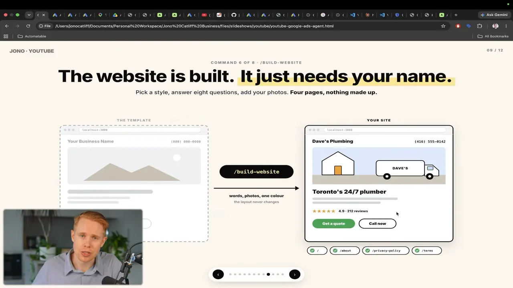
/landing-page로 광고 그룹 전용 페이지 만들기
Claude Code에 /landing-page를 입력하고 "방금 만든 캠페인과 광고 그룹, 광고에 맞는 랜딩 페이지를 만들어 줘"라고 보내요. 만들어진 페이지 맨 위 제목은 'An SEO agency in Toronto that you can fire'예요. 그 위에는 '떠날 수도 없고 하는 일도 안 보이는 대행사에 돈 내는 게 지겨우세요?'라는 질문이 붙어 있어요. 아래에는 '상담 예약하고 진단 받기' 버튼과 전화 걸기 버튼이 있어요.
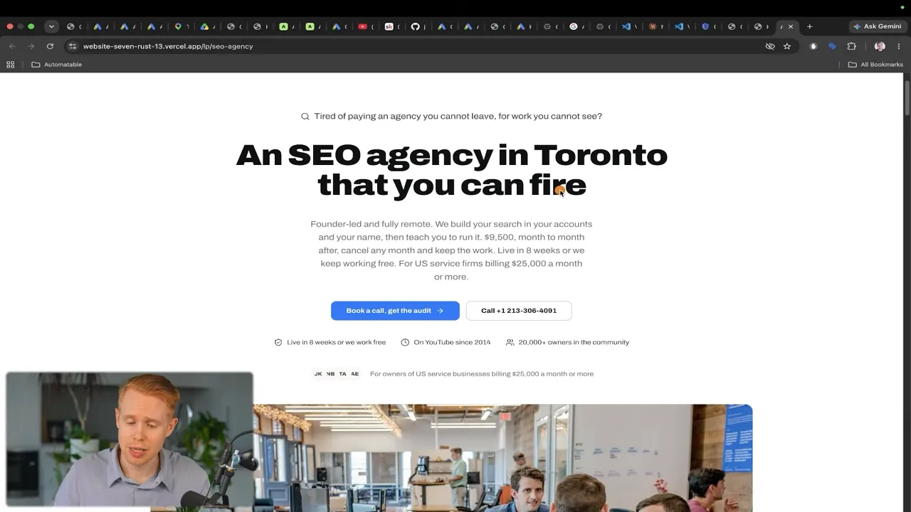
페이지는 마음에 들 때까지 조금 손보는 게 좋아요. 이기는 틀을 하나 찾으면, 앞으로 돌릴 다른 서비스에도 같은 틀을 그대로 쓰면 돼요.
전환이 잡히는지 직접 시험하기
Google Ads의 핵심은 무엇이 잘되고 무엇이 안 되는지 아는 거예요. 잘되는 데 더 쓰고 안 되는 건 끊어요. 그걸 알려면 전환을 세야 해요. 발표자가 자기 계정의 캠페인 목록을 전환율 순으로 정렬해 보여 주는데, 확대된 원 안에 50.00%, 40.93%, 31.24%, 19.01%, 18.76% 같은 값이 보여요. 발표자는 "어떤 랜딩 페이지는 전환율이 20% 가까이 나왔다"고 말해요.
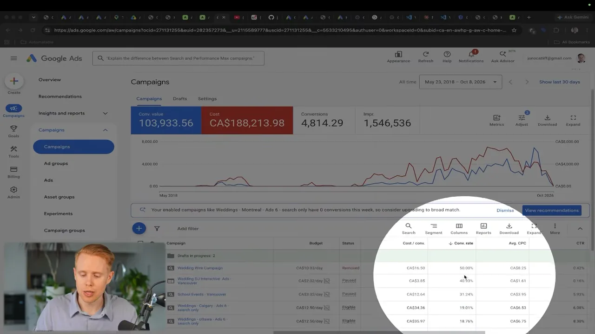
랜딩 페이지 명령이 추적 태그를 자동으로 넣어 주지만, 실제로 동작하는지는 직접 확인해야 해요. 양식부터 시험해요.
- 새 탭에서 Google Tag Assistant를 열고 도메인을 추가해요 — 랜딩 페이지 주소를 넣고 Connect를 눌러요. 랜딩 페이지가 새 탭으로 열리고, 오른쪽 아래에 'Tag Assistant Connected' 상자가 떠요
- 견적 양식을 채워 보내요 — 발표자는 아무 글자나 넣었어요.
- 감사 페이지에서 Finish를 누르고, 잡힌 태그 목록을 Claude에게 붙여 넣어요 — "이 태그들에서 전환이 잡혔어?"라고 물어요.
Tag Assistant의 연결 창은 사이트 주소 하나만 받아요. 여기에 방금 만든 랜딩 페이지 주소를 넣어요.
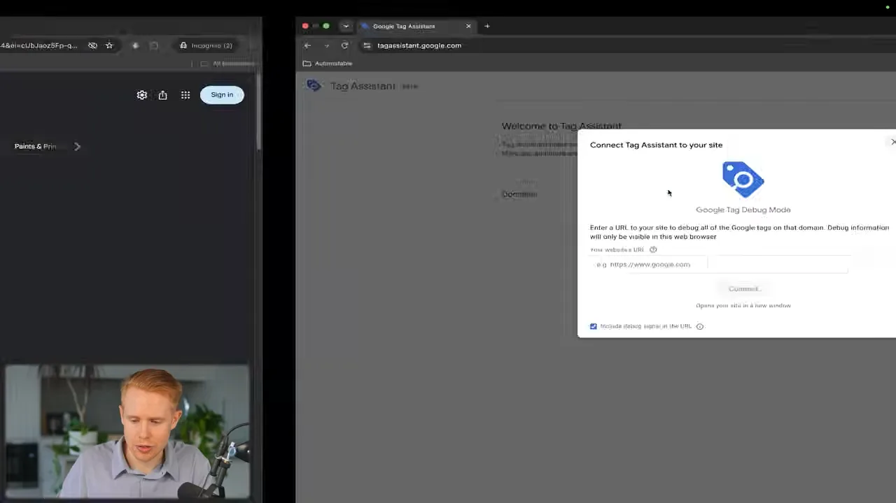
연결된 랜딩 페이지에서 'Book the call. The audit arrives first.' 옆 양식에 이름, 전화, 이메일을 채워요. 오른쪽 아래 Tag Assistant 상자에 'Tag Assistant Connected'가 떠 있고, 맨 아래 Finish 버튼으로 기록을 마무리해요.
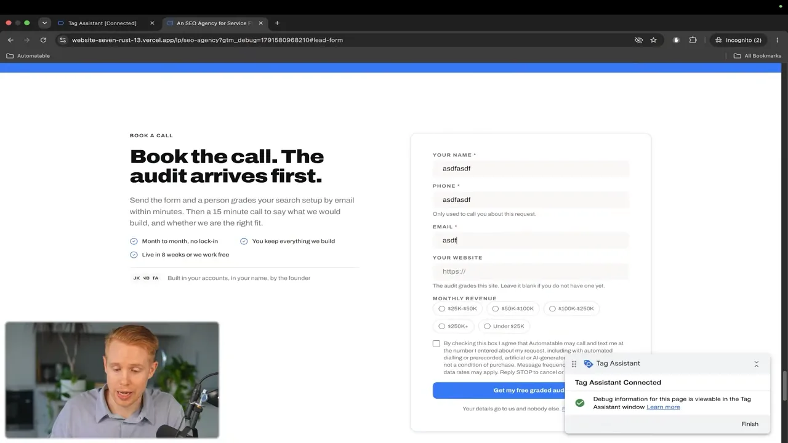
전화 전환은 조금 달라요. 먼저 사이트를 공개해야 해요. 공개한 주소를 Claude에게 붙여 "전화 전환이 제대로 연결됐어?"라고 물으면 확실한 답을 준다고 해요. 그리고 페이지를 공개했으면 앞에서 홈페이지로 넣어 둔 광고의 최종 URL을 실제 랜딩 페이지로 바꿔요.
/publish로 공개하기
공개는 두 단계예요. 코드를 GitHub에 올리고, Vercel이 그 코드를 가져가 웹사이트로 띄워요. 발표자는 GitHub를 "직접 만든 코드를 위한 Google Drive", Vercel을 SiteGround·GoDaddy 같은 호스팅이라고 비유해요. 둘 다 무료예요. 슬라이드는 /publish 한 번에 이 흐름이 이어진다고 보여 줘요. 1에서 남은 빈칸이 없는지, 모든 페이지가 추적되는지, 빌드가 통과하는지 확인하고, 2 GitHub에 올리고, 3 Vercel이 빌드하고, 4 광고가 가리킬 주소가 살아나요.
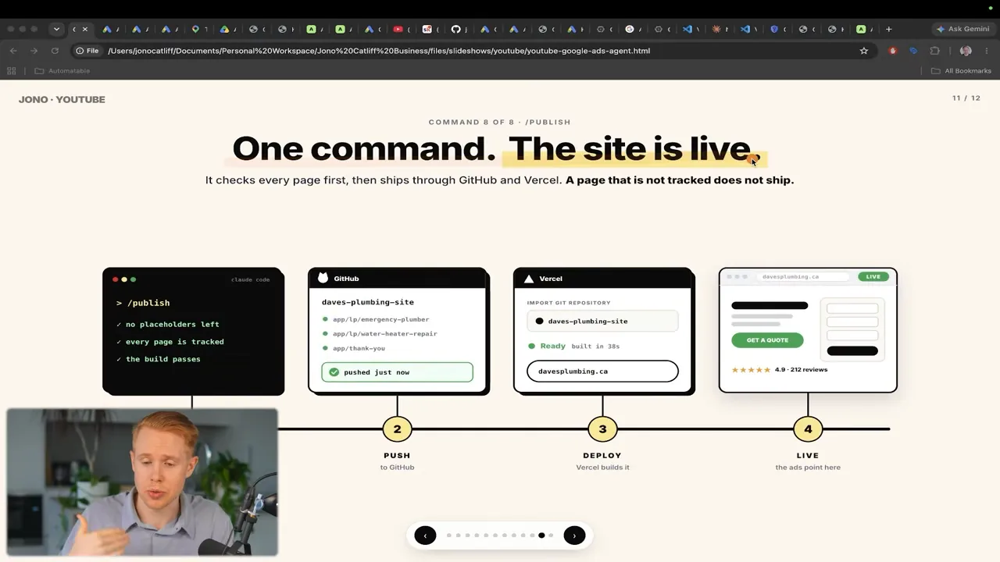
GitHub나 Vercel 계정이 없으면 Claude가 만들라고 안내해요. 끝나고 나면 GitHub 저장소에 내 컴퓨터에 있던 파일들이 그대로 올라가 있어요. 왼쪽 목록에 .claude/commands, assets, website 같은 폴더가 보여요.
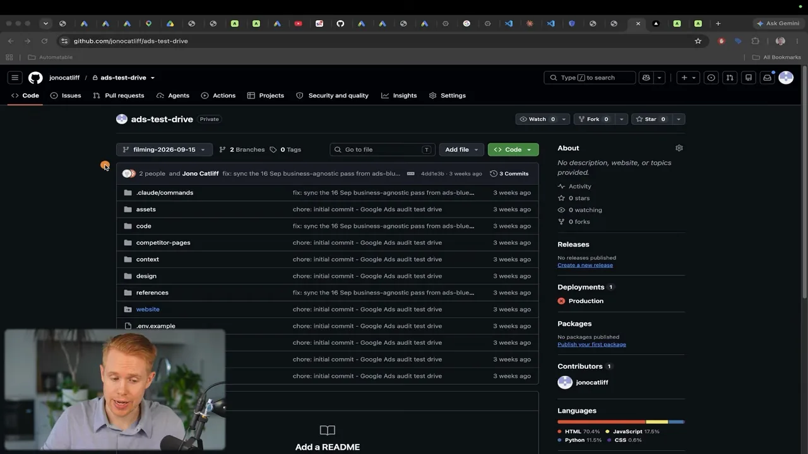